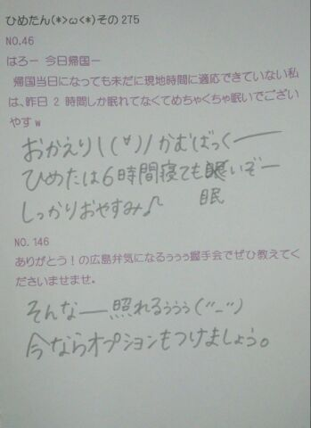

| 2013/06 14 Fri | ひめたん(*>ω<*)そ の305 |
ご無沙汰ですみなさーん(´・ω・｀)
ごめんね。枯れないでみんなーあああ
今日から寝る前20分
英語の絵本読むの習慣にする！
3日後に忘れないよう宣言しとく！
それで今日はみなさんよりひと足先に
語彙・読解力検定 受けてきましたー
もう自信はすっかりございません\( ω )/☆
みんな頑張れ！ははは
でも楽しかったよー
もうちょっと本読もうかなって思ったよ。
みんなだいすき なかいさーん♪

なかいさんってチーム名、
その場のノリでつけました感が半端なくて
本当にこれでよかったんかなって話を
今日したのー
うーんでも
じゃあ何がいいって言われたら
なにも浮かばんね(*^ω^*)まーりっかー
最近めちゃめちゃ言われるのが
「髪伸びたね」って。
うー確かに、
オーディションの時なんかに比べたら
結構長いかもなうなうだけれども
なんていうか、ここだけの話、
年に２回くらい ちゃんと５センチくらい
切ってるんだけどなー...
ここだけの話にすることでもないね(白目)
は、はははっ☆
そんな感じでー質問かえしますー
ごめんね。枯れないでみんなーあああ
今日から寝る前20分
英語の絵本読むの習慣にする！
3日後に忘れないよう宣言しとく！
それで今日はみなさんよりひと足先に
語彙・読解力検定 受けてきましたー
もう自信はすっかりございません\( ω )/☆
みんな頑張れ！ははは
でも楽しかったよー
もうちょっと本読もうかなって思ったよ。
みんなだいすき なかいさーん♪
なかいさんってチーム名、
その場のノリでつけました感が半端なくて
本当にこれでよかったんかなって話を
今日したのー
うーんでも
じゃあ何がいいって言われたら
なにも浮かばんね(*^ω^*)まーりっかー
最近めちゃめちゃ言われるのが
「髪伸びたね」って。
うー確かに、
オーディションの時なんかに比べたら
結構長いかもなうなうだけれども
なんていうか、ここだけの話、
年に２回くらい ちゃんと５センチくらい
切ってるんだけどなー...
ここだけの話にすることでもないね(白目)
は、はははっ☆
そんな感じでー質問かえしますー

 友達と好きな人がかぶったら、
友達と好きな人がかぶったら、
ひめたんならどうする？
それはつらいねー( >< )
そのときになってみないとわからんけど
できるだーけ平和に行きたいですねー
ひめたんのちょっと変わったフェチなんか
あれば教えてー！
何でしょう。かわったフェチーだとー( д )
多分フェチではないけど、
てか絶対フェチちゃうけども
なんだろうね、あ、今いっこ浮かんだけど
公表すんのやめます恥ずかしいからーきゃひ
ひめたんもそうとうあせっかきなほう？
汗っかき！
代謝がいいわけではきっとないけど(´・ω・｀)
何かにチョイ足して作る
食べ物ｏｒ飲み物って他にもある？
あったら、レシピも教えて〜。
たこやきのタコのかわりに
ウインナー入れたらいいよーとか
そーゆーやつしか思い付かんわ大丈夫かな
しお しょうゆ みそ
共通する3つのワードは、なんでしょ？
へ、調味料？ラーメン？
あといっこなーにーーー大豆ーちゃうかー
一つ習得できるとしたら、
中元さんはどの超能力を選びますか。
A）サイコキネシス（念力）
B）テレパシー（念話）
C）クレアボヤンス（透視）
D）プレコグニション（予知）
テレポートがいいです。あ、ないねー
じゃあそうだなーサイコキネシスがいいな！
えサイコキネシスってなに？念力...だと...？
ひめたんは錠剤を...
・水と一緒に飲む派
それとも
・飲んでから水で流し込む派
水と一緒に飲む派。
錠剤好きくなーい( ω )
ひめたんはいつでもどこでも寝れますか？
そうですね。わりかし最近は
どこでも寝れるようになってまいりましたよ
最近の睡眠時間はどれくらい？
朝に強い方？弱い方？
３時間の日も６時間の日もあるけど、きっと、
みんなのひめたんは21時には寝るだろうから
じゃあ９時間ってことにしとこかな。はは
朝は強い！めざましよりはよ起きます！
遠征先でひめたとホテル一緒だったら
まず寝坊はさせません(｀・ω・´)
ひめちゃんはネイルとか興味ありますか？
あと今ネイルしてますか？
興味あるー♪
学校の子はみんなかわいくしてるのー
うちにはジェルネイルできる
赤外線のもあるんだけどねー
でもやってないのー
そんなかんじでねー
眠いけどまだ寝れない！

(＊´・ω・＊)
コメント(177)
2013/06/14 23:48